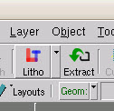
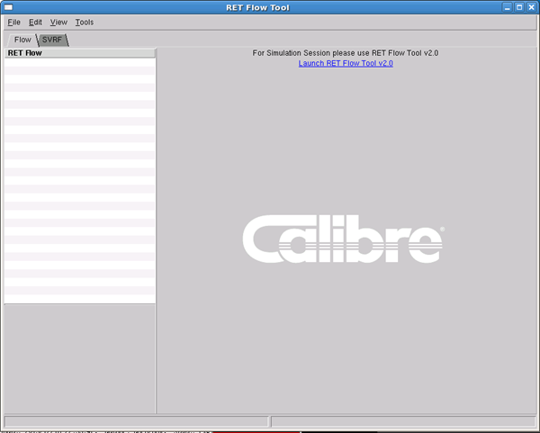
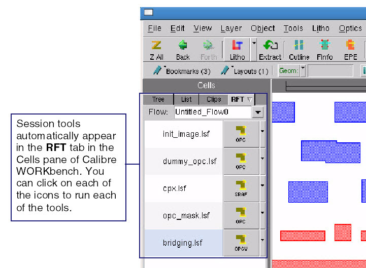
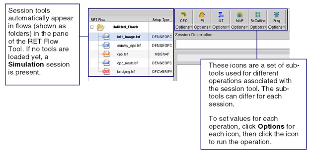
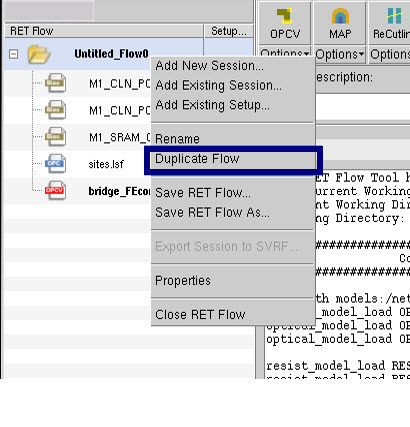
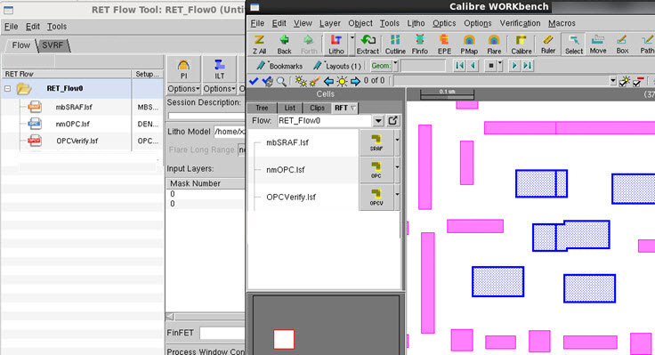

The Calibre RET
Flow Tool is organized along a flow of related tool sessions. A
tool session is your particular settings for a Calibre lithography
tool such as Calibre nmOPC or Calibre OPCverify.
Procedure
- Invoke Calibre WORKbench and
load a layout.
- In Calibre WORKbench, either
click the Litho button or select .
The Calibre RET Flow Tool appears with the Flow tab displayed.
Figure 1. Litho Button in Calibre
WORKbench
Figure 2. Calibre RET Flow Tool
Note: To keep the Calibre WORKbench window from closing in case
of an execution error, select . Calibre WORKbench
runs the RFT operation as a separate process, using an additional
license.
- Load or create a session flow.
Sessions are the individual RET tools that you intend to use as
well as their setup files. You can load or create sessions using
one of the following methods:
After using any of these methods,
a list of session icons appears in both the RET Flow Tool and the
Calibre WORKbench window.
Figure 3. RET Tool Sessions
in Calibre WORKbench
Figure 4. RET Tool Sessions
in the RET Flow Tool
These icons represent a “flow”
where you can run or re-run session files. This allows you to have
multiple sequenced runs of RET tools, rather than having to manage individual
tool sessions.
- For several session tools,
there are a set of sub-tools that you can use to produce output. You
can change the options for these sub-tools, or directly edit the
setup file.
- Run your sessions to produce
the desired RET output.
Tip You
can click Clear Layers to delete all layers
generated by the RET Flow Tool.
- Save the session flow (this
includes all the settings for each of the session tools) for use at
a later time by selecting or Save RET Flow As.
You can make a duplicate copy
of a pre-existing session flow by right-clicking on an RET Flow
folder and selecting Duplicate from
the menu that appears.
Figure 5. Duplicating an Existing
Flow
Results
When
you save a session flow, the RET Flow Tool creates a directory by
the name you specify. Inside the directory are directories for each
flow. The session setups are saved in the flow directory with a .lsf extension.
Once the flow is saved, you can optionally
invoke Calibre WORKbench with the RET Flow Tool loaded with the
previously-saved flow using the following command:
$MGC_HOME/bin/calibrewb layout_file -rft flow_dir
where layout_file is
the layout file and flow_dir is
the previously-saved RET Flow Tool flow directory.
For example:
$MGC_HOME/bin/calibrewb demo.oas -rft RET_Flow0
This command line invokes Calibre
WORKbench and the RET Flow Tool as illustrated in Figure 6.
Figure 6. Calibre WORKbench with
RET Flow Tool Loaded
Examples
You can watch this process of extracting setup files from an
SVRF file and then configuring a run in the following video (extraction
procedure begins at 00:56 in the video):